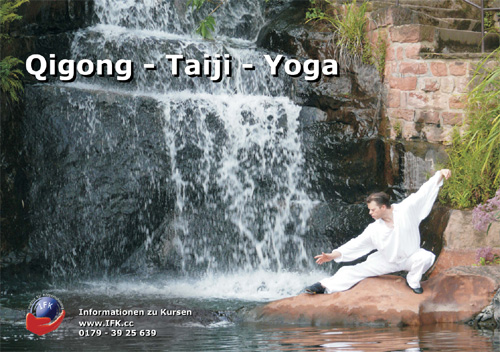

- Einzelunterricht für Paare
- Unterricht für Einzelpersonen
Für alle, die sich ein intensiveres und individuelles Lernen wünschen oder an spezifischen Fragestellungen arbeiten möchten.
Der tänzerische Schwerpunkt in meinen Einzelstunden wird individuell festgelegt und orientiert sich an den persönlichen Zielen und Möglichkeiten meiner Schülerinnen und Schüler:
- Frauentechnik
- Männertechnik
- Tango de Salon
- Führungstechnik
- Encuentro Milonguero
- Analyse unterschiedliche Caminadas (Geharten) im Tango
- Grundlagenarbeit (Haltung, Achse, Connection, Gleichgewicht, Körperarbeit…)
- Tango Nuevo sowie auf Wunsch auch Elemente des Show- und Bühnentangos
- Tangomusik für Tänzer - Zur Musik tanzen!
(...in Kursen und Workshops lehren das feine Hinhören,
eröffnen einen neuen Zugang zum Tanz. Rhythmische Muster,
Melodie,
Wiederholungen und Dialoge, Akzente ... wie entsteht aus dem Gehörten Tanz?)
Ich bin einer der wenigen Tänzer, die sowohl die Männer- als auch die Frauenrolle beherrschen.
Im Unterricht lege ich viel Wert auf saubere Technik, Verinnerlichung von Grundlagen sowie den respektvollen Umgang zwischen Frau und Mann.
Als einer von wenigen professionellen Tangotänzern und –Lehrern in Deutschland unterrichte ich seit über 20 Jahren u.a. in Berlin, Karlsruhe, Saarbrücken und in mehreren Städten in Rheinland- Pfalz. Zudem bin ich als Tänzer weltweit unterwegs, u.a. in Italien, Frankreich, Argentinien, Schweiz und Spanien.
Kontakt:
Mobil: 0179 – 39 25 639
Email:
Weitere Informationen über mich siehe www.tangoshow.net
Ich kann mit Stolz behaupten, schon einige sehr gute Tangotänzer ausgebildet zu haben von denen einige heute selbst unterrichten.
Mitbegründer der Tango Argentino Tanzschulen in:
Bad Dürkheim - Tangohaus.de
Saarbrücken - JuanTango.de
Saarlouis - Tango-Passito.de
Speyer - Tango-Speyer.de
Gründer des IFK - Institut Für Körperschulung
www.IFK.cc
Ausgebildeter Qigong-Lehrer, Taiji-Lehrer und Yoga-Lehrer.
